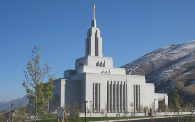
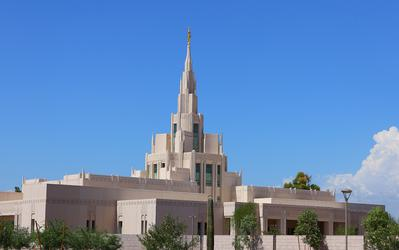
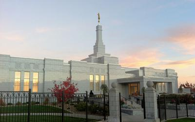

Temple Name: Oquirrh Mountain Utah
Location: South Jordan, Utah, United States
Dedication: 21 August, 2009
Area: 60000

Description: This temple holds many memroies for me, this the first temple I went throught to do baptisms for the dead and later I had my Endowment here. I hope to be sealed in this temple when it's time.
Temple Name: Draper Utah
Location: Draper, Utah, United States
Dedication: 20 March, 2009
Area: 58300
Description: The Draper Temple is one of the 5 temples in the Salt Lake Valley, I love how the baptism font is shaped and much larger than I originally thought it would be considering the temples size.
Temple Name: Payson Utah
Location: Payson, Utah, United States
Dedication: 7 June, 2015
Area: 96630

Description: During my mission my cousin go married in this temple. Seeing the beauty indie was remarkable, the sealing rook that day was shining with the rising sun and the glass stain windows were very beautiful that day.
Temple Name: Phoenix Arizona
Location: Phoenix, Arizona, United States
Dedication: 16 November, 2014
Area: 64870
Description: This temple reminds me about the Draper Utah Temple, the size may be different but its spire resembles with the other Utah temples, I can consider this temple a home away from home.
Temple Name: Reno Nevada
Location: Reno, Nevada, United States
Dedication: 23 April, 2000
Area: 10700
Description: Currently this is one of the two temples that exist in Nevada, however will have four temples in nevada once construction starts for the other two.